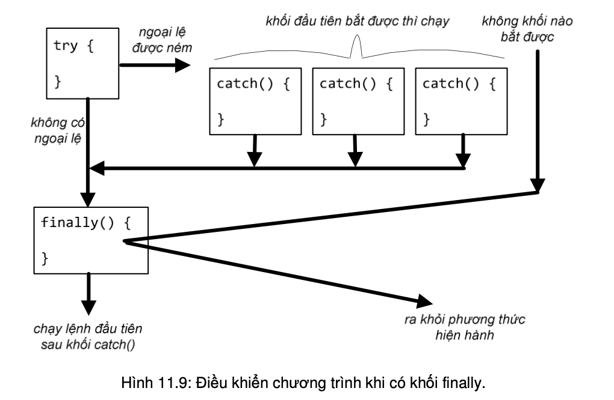

Mục trước đã giới thiệu về việc dùng khối try/catch để bắt và xử lý ngoại lệ. Mục này trình bày kĩ hơn về cấu trúc và cơ chế hoạt động của khối try/catch.
Khi một ngoại lệ xảy ra, trình biên dịch tìm một khối catch phù hợp trong các khối catch đi kèm. Trình tự tìm là lần lượt từ khối thứ nhất đến khối cuối cùng, khối catch đầu tiên bắt được ngoại lệ đó sẽ được thực thi.
Khi ta chạy một lệnh/phương thức có thể sinh ngoại lệ, một trong hai trường hợp xảy ra:
Phần try và phần catch trong khối try/catch là những phần bắt buộc phải có. Ngoài ra, ta còn có thể lắp một phần có tên finally vào làm phần cuối cùng của khối try/catch.
Một khối finally là nơi ta đặt các đoạn mã phải được thực thi bất kể ngoại lệ có xảy ra hay không.
Với khối finally, trong bất kể tình huống nào, luồng điều khiển cũng phải chạy qua khối lệnh đó. Khi ngoại lệ bị ném ra mà không có khối catch nào bắt được, khối finally cũng chạy trước khi luồng điều kiển ra khỏi phương thức. Ngay cả khi có lệnh return trong khối try hoặc một khối catch, khối finally cũng được thực thi trước khi quay lại chạy lệnh return đó.
Với đặc điểm đó, khối finally cho phép ta đặt các đoạn mã dọn dẹp tại một nơi thay vì phải lặp lại nó tại tất cả các điểm mà điều khiển chương trình có thể thoát ra khỏi phương thức.
Lưu ý rằng, về mặt cú pháp, ta không thể chèn mã vào giữa các phần try, catch, và finally trong một khối try/catch; khối try thì bắt buộc phải có, nhưng các khối catch và finally thì không; tuy nhiên, sau một khối try phải có ít nhất một khối catch hoặc finally.
Như ta đã trình bày trong Mục 11.1.3, ngoại lệ cũng là các đối tượng nên có tính đa hình, và một khối catch dành cho ngoại lệ lớp cha cũng bắt được ngoại lệ lớp con.
Ví dụ các khối catch sau đều bắt được ngoại lệ loại InputMismatchException:
Có thể hình dung catch(Exception e) là một cái rổ to nhất và hứng được các loại đồ vật với nhiều kích thước hình dạng khác nhau, catch(IOException e) là cái rổ nhỏ hơn chút nên hứng được ít loại đồ vật hơn, còn catch (InputMismatchException e) là cái rổ nhỏ nhất và chỉ hứng vừa một loại đồ vật. Ta có thể chỉ dùng một cái rổ to nhất – khối catch bắt loại ngoại lệ tổng quát nhất – để bắt tất cả các ngoại lệ và xử lý một thể. Tuy nhiên, nếu ta muốn xử lý tùy theo các ngoại lệ thuộc loại khác nhau thì nên dùng các khối catch khác nhau trong một khối try/catch.
Vậy các khối catch đó nên được để theo thứ tự nào? Nhớ lại rằng khi một ngoại lệ được ném ra từ bên trong khối try, theo thứ tự từ trên xuống dưới, khối catch nào bắt được ngoại lệ đó thì sẽ được chạy. Do đó, nếu cái rổ to được thử hứng trước cái rổ nhỏ hơn, nghĩa là khối catch cho lớp cha được đặt trước khối catch dành cho lớp con, thì cái rổ to sẽ hứng được ngay còn cái rổ nhỏ hơn sẽ không bao giờ đến lượt mình hứng được cái gì. Vì lí do đó, trình biên dịch sẽ báo lỗi nếu ta không tuân theo quy tắc này.